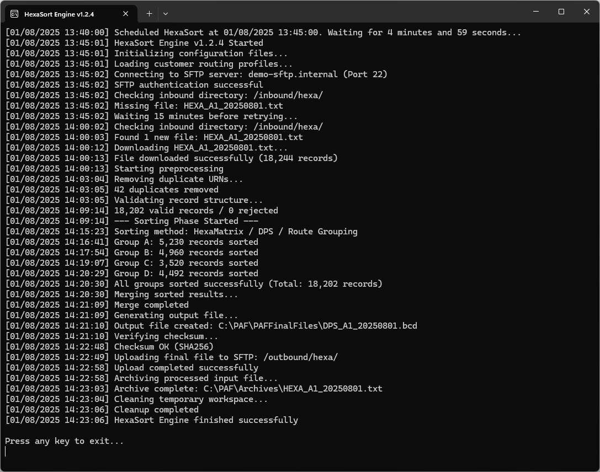

HexaSort - Automated Data Processing & File Management
HexaSort is a console-based automation tool designed to efficiently handle large datasets and manage file workflows. The program connects to remote servers, downloads and validates incoming files, processes millions of records, generates output for downstream systems, and sends email notifications at each step-all fully automated on a schedule. HexaSort ensures accuracy, reliability, and seamless integration with existing data pipelines.

- Scheduled automated execution with configurable intervals
- Secure SFTP connection to check, download, and verify files
- Processing of tens of millions of records per run
- Automatic file extraction, renaming, and version tracking
- Data integrity and validation checks before final output
- Generation of output files for downstream applications
- Automated email notifications for each step (success or failure)
- Cleanup of temporary files to maintain system efficiency